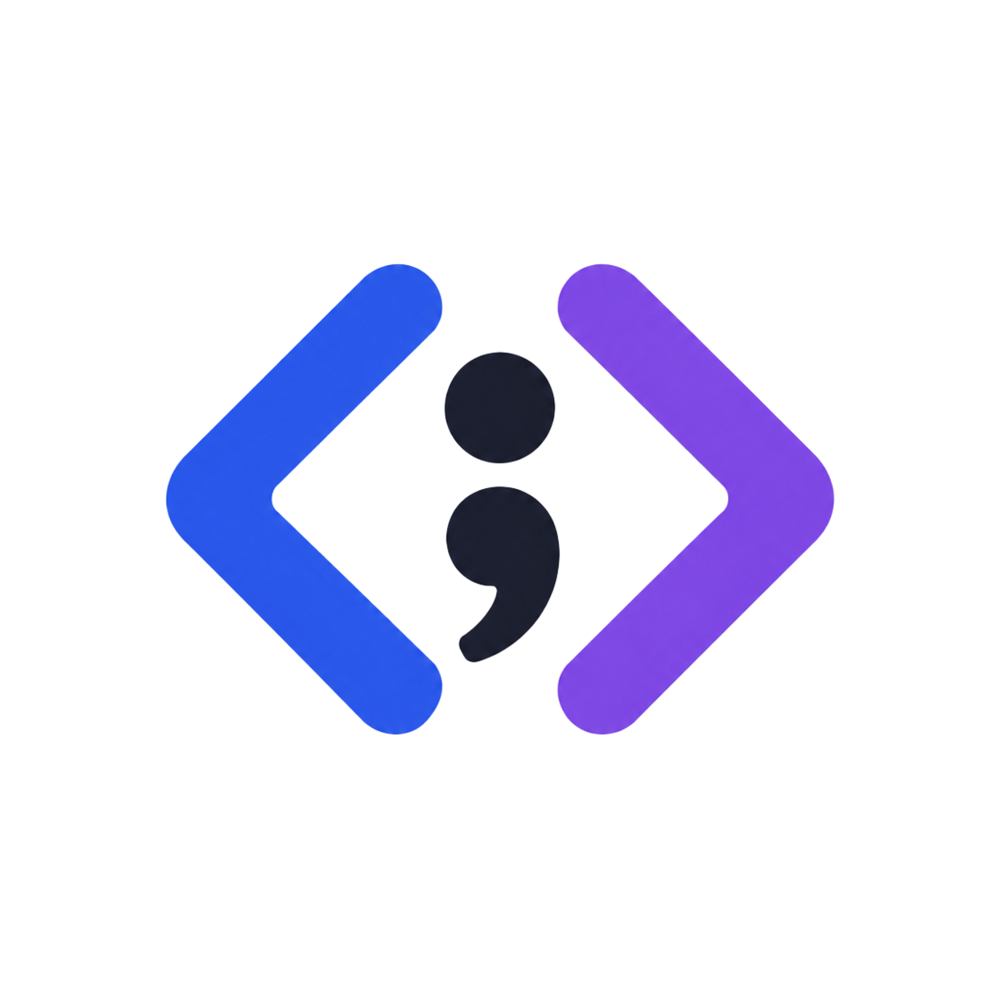

Conheça a proposta da UPX e veja quem desenvolveu o UPX Hub.
Sobre o Grupo

O Dot Comma é um grupo de estudantes do 2º semestre de Engenharia da Computação. O grupo é unido pelo entusiasmo por tecnologia, design e desenvolvimento de software. O time uniu os conhecimentos de Web Design e de Usina de Projetos Experimentais (UPX) para criar o UPX Hub.
O UPX Hub nasce como uma plataforma centralizada. Ela abriga e dá visibilidade aos trabalhos desenvolvidos ao longo da jornada acadêmica. Mais do que um repositório, o projeto quer estimular a interação entre alunos. Ele também facilita o compartilhamento de conhecimento. O objetivo é transformar ideias acadêmicas em uma comunidade colaborativa.
Membros do Grupo:
- Ana Kilciauskas
- Erica Yuying
- Erick Ruibin
- Frederico Rodrigues
- Isadora Fioravante
Perguntas frequentes sobre o UPX Hub
O que é a UPX?
UPX significa Usina de Projetos Experimentais. É uma unidade curricular da UniFacens. Nela, os alunos criam soluções para desafios reais. Saiba mais na seção Conheça a UPX.
Quais temas a UPX aborda?
Cada semestre tem um tema. Entre eles estão cidades inteligentes, energias renováveis, mobilidade e urbanização, transformação digital e impactos das mudanças climáticas. Os projetos deste site tratam de alagamentos e drenagem urbana em Sorocaba.
Quem desenvolveu o UPX Hub?
O UPX Hub foi criado pelo grupo Dot Comma. São estudantes do 2º semestre de Engenharia da Computação da UniFacens. Conheça os integrantes em Sobre o Grupo.
Como posso compartilhar e colaborar com o UPX Hub?
Compartilhe o site com colegas, professores e amigos. Colabore com ideias e sugestões sobre os projetos. Assim, mais pessoas conhecem as soluções e ajudam a transformar a cidade.
Onde encontro mais informações sobre a UniFacens?
Acesse o site oficial da UniFacens para conhecer os cursos e as atividades da instituição.
Compartilhe, colabore e transforme com o UPX Hub
Compartilhe os projetos desenvolvidos na UPX para que outros estudantes conheçam soluções reais para problemas da cidade.
Colabore com ideias, críticas e sugestões, porque um projeto ganha força quando várias pessoas contribuem.
Transforme trabalhos acadêmicos em impacto real, aproximando alunos, professores, empresas e a comunidade de Sorocaba.